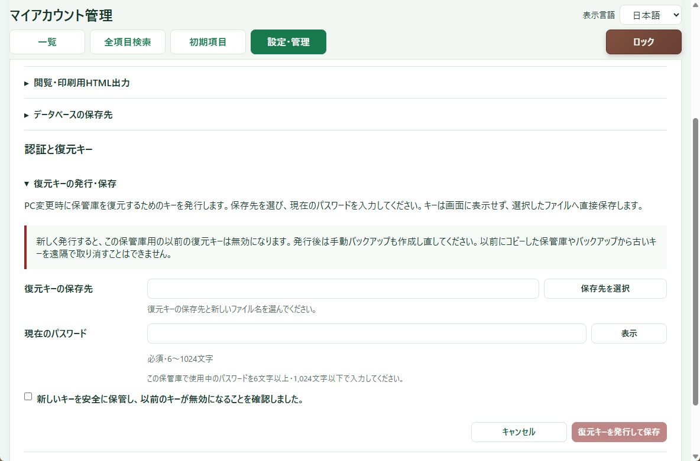
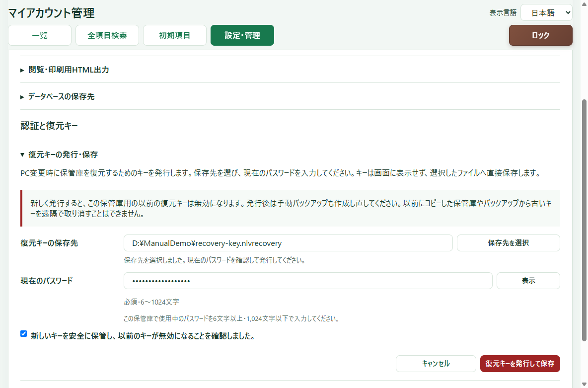
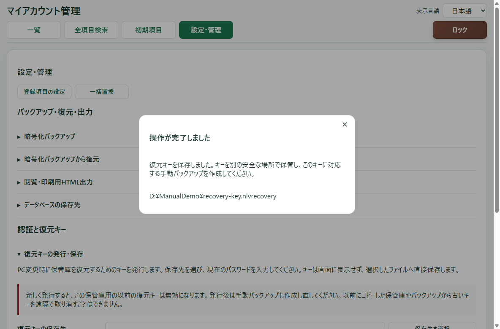

37復元キーを発行
現在の保管庫に対応する復元キーをファイルへ保存します。
手順一覧を開く（3手順）
1復元キーの発行欄を開く
［設定・管理］で［復元キーの発行・保存］を開きます。

2保存先・パスワード・確認を指定
保存先には新しい .nlvrecovery ファイルを選び、現在のパスワードを入力します。注意事項を読んで確認欄をオンにします。

3［復元キーを発行して保存］を押す
完了表示と保存先を確認します。保存したキーは別の安全な場所で保管します。
